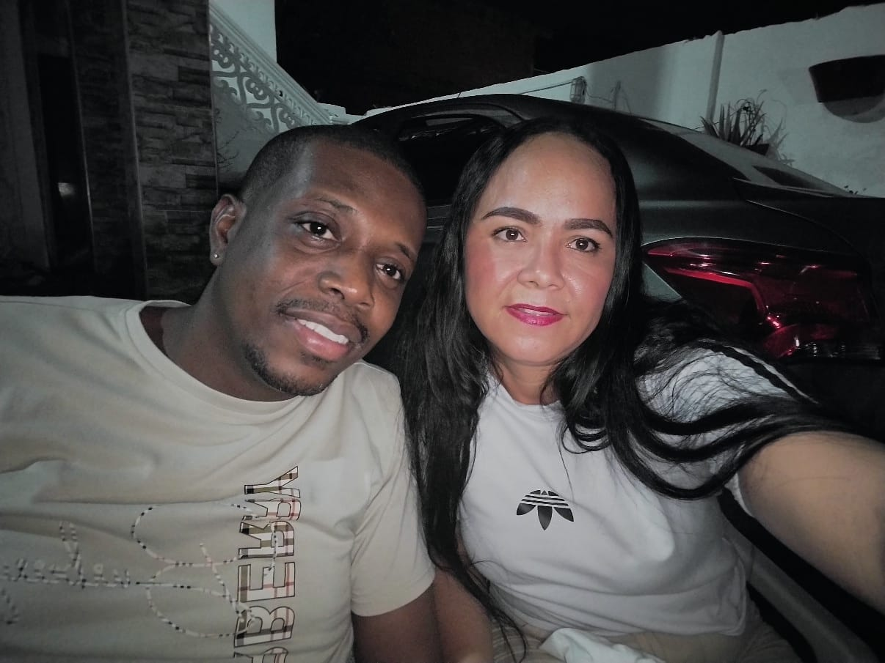

About Me & My Learning Journey

Hello! My name is Edilma Baena Beleño. I am 37 years old and I live in Cartagena. I am married and I have two children. I work and study online, focusing on logistics process coordination. I am learning English with the help of SENA classes, and I also use internet resources to practice more. My main motivation is to improve myself at work and in my personal life, always looking to grow and reach new goals.
My Hobby: Skating

I like reading, watching movies, and walking with my family. These moments help me relax and feel calm. They also make our family bond stronger, because every time together becomes a special memory.
Spending this time reminds me how important it is to be with my loved ones, to share laughs, talks, and experiences. For me, these moments give me energy and motivation. They help me keep balance between my responsibilities and the happiness of being with my family.
Travels and Dreams

We would like to travel to New York because it is a city full of history, culture, and famous places. For me, it would be a very special experience, not only to share with my family but also to practice my English in real life.
Being able to talk with people in their language and use what I have learned would be very good for me. I could also learn new words and expressions. Traveling helps us open our minds, makes family bonds stronger, and gives unforgettable memories. That is why visiting New York is one of my biggest dreams.
Critical Thinking and Media Literacy

Yo pienso que hoy en día es muy importante analizar bien la información que recibimos, porque no todo lo que aparece en redes sociales o en internet es cierto. Hay muchas fake news y propaganda que pueden confundirnos o manipular lo que pensamos.
Por eso, trato de no creer en lo primero que leo, sino de revisar si la fuente es confiable y de comparar la información con otros medios. Creo que todos deberíamos hacer lo mismo, porque compartir noticias falsas solo genera más desinformación.
En mi opinión, lo mejor es tener siempre una actitud crítica: preguntar, investigar y reflexionar antes de aceptar algo como verdadero. De esa manera podemos protegernos y también ayudar a que otras personas no caigan en el error de creer en información que no es real.
Crime and Punishment

Yo creo que la justicia es muy importante porque ayuda a que podamos vivir con respeto y en orden. Cuando alguien comete un crimen, no solo le hace daño a la persona afectada, sino que también lastima a toda la sociedad, porque genera miedo y desconfianza.
Pienso que los castigos deben ser justos y servir no solo para corregir, sino también para enseñar que nuestras acciones tienen consecuencias. Pero al mismo tiempo creo que la justicia también debería dar oportunidades para que las personas cambien y puedan mejorar.
Al final, estoy convencida de que una sociedad más justa no depende solo de castigar a quien se equivoca, sino también de educar, promover valores y apoyarnos entre todos. Si cada persona hiciera su parte, habría menos crímenes y podríamos vivir con más paz y seguridad.
Current Issues / News I Care About

Un tema de actualidad que me interesa mucho es la inteligencia artificial. Cada día escuchamos más sobre cómo está cambiando nuestra forma de vivir, estudiar y trabajar. Yo pienso que la IA tiene muchas cosas positivas, porque ayuda a ahorrar tiempo, facilita tareas difíciles y hasta puede apoyar en la educación, la salud o la investigación.
Sin embargo, también creo que es importante usar la tecnología con responsabilidad, porque no todo lo que ofrece la inteligencia artificial es perfecto. A veces puede dar información incorrecta o incluso reemplazar trabajos que hacen las personas. Por eso, pienso que lo mejor es aprender a convivir con ella, aprovechar sus beneficios y al mismo tiempo no dejar de lado el pensamiento crítico y el valor del ser humano.
Para mí, la IA es una herramienta poderosa que, si se utiliza bien, puede abrirnos muchas oportunidades, pero depende de nosotros darle un uso correcto y consciente.